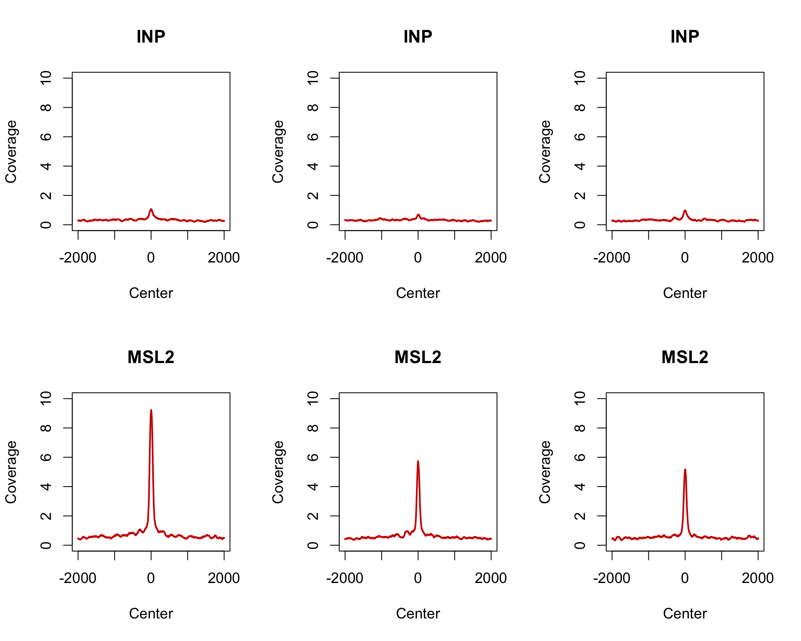

# do not run here
module load ngs/bowtie2/2.2.9
module load ngs/samtools/1.3.1
BOWTIE_INDEX="../Drosophila_melanogaster/UCSC/dm6/Sequence/Bowtie2Index/genome"
BOWTIE_OPTS="-p 24 --end-to-end --very-sensitive --no-unal --no-mixed --no-discordant -I 10 -X 130"
bowtie2 $BOWTIE_OPTS -x $BOWTIE_INDEX -1 ${FILEBASE}_1.txt.gz -2 ${FILEBASE}_2.txt.gz > ${FILEBASE}.sam 2> ${FILEBASE}.stats
samtools view -bS -@ 24 -q 12 ${FILEBASE}.sam | samtools sort -@ 24 - | tee ${FILEBASE}.bam | samtools index - ${FILEBASE}.bam.bai# do not run here
CHR='chrX'
TOTAL=`samtools view -c ${FILEBASE}.bam`
SCALER=`echo "scale=10; 1000000/(${TOTAL})" | bc`
samtools view -b -s ${SCALER} ${FILEBASE}.bam > ${FILEBASE}.1M.bam
samtools index ${FILEBASE}.1M.bam
samtools view -b ${FILEBASE}.1M.bam ${CHR} > ${FILEBASE}.1M.${CHR}.bam
samtools index ${FILEBASE}.1M.${CHR}.bamlibrary(rtracklayer)
sites <- import.bed("data_BasicChIPSeq/hasC_peaks_dm6_ucsc.bed")
# take a window of 4000 surrounding the center
win_size <- 4000
sites_4000 <- resize(sites, width = win_size, fix = "center")
sites_4000## GRanges object with 247 ranges and 0 metadata columns:
## seqnames ranges strand
## <Rle> <IRanges> <Rle>
## [1] chrX 11578250-11582249 *
## [2] chrX 17819715-17823714 *
## [3] chrX 16796370-16800369 *
## [4] chrX 5073980-5077979 *
## [5] chrX 10863800-10867799 *
## ... ... ... ...
## [243] chrX 22459702-22463701 *
## [244] chrX 18633480-18637479 *
## [245] chrX 4925585-4929584 *
## [246] chrX 4630760-4634759 *
## [247] chrX 6534805-6538804 *
## -------
## seqinfo: 3 sequences from an unspecified genome; no seqlengths# function to create coverage from BAM files
library(GenomicAlignments)
bam2cov <- function(bam_file, type = c("SINGLE","PAIRED"), width = 150, MAPQ = 255){
if(type == "SINGLE"){
my_bam <- readGAlignments(bam_file, param = ScanBamParam(mapqFilter = MAPQ))
grs <- as(my_bam, "GRanges")
grsr <- resize(grs, width)
cov <- coverage(grsr)
return(cov)
} else if(type == "PAIRED"){
my_bam <- readGAlignmentPairs(bam_file,param = ScanBamParam(mapqFilter = MAPQ))
grsr <- as(my_bam, "GRanges")
cov <- coverage(grsr)
return(cov)
}
}# set bam file path
data_dir <- "data_BasicChIPSeq/"
bam_files <- list.files(path = data_dir, pattern = ".bam$")
bam_path <- file.path(data_dir, bam_files)
# parallel processing
parallel::mclapply(seq_along(bam_files), mc.cores = 8, FUN = function(i){
bam_name <- paste0("coverage.", gsub(".bam","",bam_files[i]))
# create coverage
bam_coverage <- bam2cov(bam_file = bam_path[i],
type = "PAIRED", MAPQ = 12)
assign(bam_name, bam_coverage)
# save as rda file
save(list = bam_name, file = paste0(data_dir, bam_name, ".rda"))
})
# load coverage files
cov_files <- file.path(data_dir, list.files(path = data_dir, pattern = ".rda$"))
for(i in seq_along(cov_files)){
load(cov_files[i])
}covs <- ls(pattern = "coverage.")
par(mfcol=c(2,3), cex=1.1)
for(i in seq_along(covs)){
covv <- get(covs[i])
# format name
main_title <- gsub(".*E03_|_[G,A,T,C][G,A,T,C].*", "", covs[i])
plot(colMeans(as.matrix(covv[sites_4000])),
type="l", lwd=2, col = "red3",
ylim = c(0,10), xaxt="n",
ylab = "Coverage", xlab = "Center",
main = main_title)
axis(side = 1, at = seq(1,win_size, length.out = 5),
labels = c(-(win_size/2),"",0,"",(win_size/2)) )
}
The dataset was generated by Nadia Prayitno (LMU, BMC, Becker group)
Progressive dosage compensation during Drosophila embryogenesis is reflected by gene arrangement. Prayitno K, Schauer T, Regnard C, Becker PB. EMBO Rep. 2019 Aug;20(8):e48138. doi: 10.15252/embr.201948138. Epub 2019 Jul 9. PMID: 31286660
Note: this pipeline (subsampling etc.) differs from the papers version, but findings are the same either way